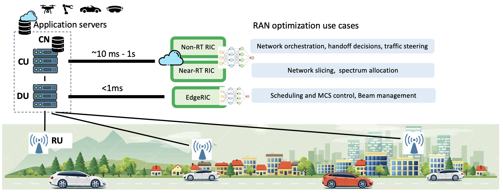
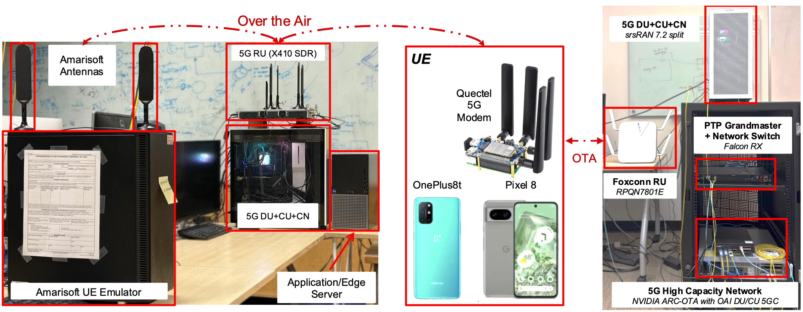

EdgeRIC: Delivering Real-time Intelligence to Radio Access Networks¶
{kind=link}

EdgeRIC is a platform for real-time AI-in-the-loop for decision and control in cellular networks. It is designed to access network and application-level information to execute AI-optimized and other policies in real-time (sub-millisecond) .
Our Projects¶
Meet Our Team¶
Our Team
Demos¶
Demos
BeamArmor
Anti-jamming: Controlling MIMO weights in realtime to steer the beam null toward the jammer
AI Scheduling
RL-based scheduling policy trained to maximize overall system throughput
Multi-site Management
Interference-aware resource distribution across sites with Near-RT RIC
Events¶
Open Source Repositories¶
5G Testbed¶

5G Testbed
EdgeRIC Architecture¶
EdgeRIC Architecture
RT-E2 interface (Real time E2 interface)
Messaging framework between the RAN stack and EdgeRIC, built on ZMQ and protobuf, with TTI-level synchronization.
RT-E2 Report Message
Per-UE KPI report structure (cqi, buffers, TBS, rates) sent every TTI from the RAN to EdgeRIC.
RT-E2 Policy Message
Control-action messages from μApps back to the RAN, including scheduling weights and blanking decisions.
REDIS database
How Redis is used for model storage, μApp lifecycle management, and dynamic configuration.
μApps – EdgeRIC microservices
How μApps subscribe to metrics, compute policies, and send control via the EdgeRIC messenger.
Tutorials¶
Tutorials
EdgeRIC Main Paper Tutorial
Real-time MAC scheduler, multiple scheduling algorithms (Max Weight, Max CQI, PF, Round Robin, RL-based).
Windex Tutorial
Realtime Neural Whittle Indexing for scalable service guarantees in NextG cellular networks.
BeamArmor Tutorial
Null-steering anti-jamming on srsRAN 4G stack; MIMO-RIC and BeamArmor μApp.
SPARC Tutorial
Spatio-Temporal Adaptive Resource Control for multi-site spectrum management in NextG networks.
Datasets¶
Datasets
Funding¶
This work was funded primarily by NSF Grants CNS 2312978, CNS 2312979 and in part by CNS 1955696, ECCS 2030245, ARO grant W911NF- 19-1-0367.